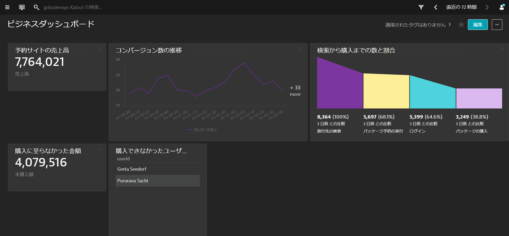

このリポジトリには、BizDevOpsのためのハンズオンで実施する内容が含まれています。
事前準備
- DynatraceのAccount：フリートライアルの申し込み
- Chrome ブラウザ
Dynatrace主催のハンズオンワークショップへ参加されている方にはDynatraceの環境が自動で払い出されるため フリートライアルから申し込んでいただく必要はありません。
学習内容
- Real User Monitoringの強化：メトリクスとビジネスコンテキストの紐付け
- セッション分析のための個別ユーザーの識別：ユーザータグの設定
- コンバージョンゴールの設定・確認
- セッションとユーザーアクションのプロパティ
- セッションリプレイの設定
- ダッシュボードによるビジネスKPIの可視化
- Dynatraceによるフロントエンドエラーの確認
- Core Web Vitalsによるフロントエンドパフォーマンスの確認
- CSSセレクターの取得方法
- リクエストアトリビュートによるサーバーサイドとフロントエンドの紐付け
サンプルアプリケーション
このラボでは、サンプルアプリケーションとしてeasyTravelを使用します。 easyTravelには2つのインターフェースがあります。
- Classic

- Angular

この演習ではDynatraceの基本的なReal User Monitoringの構成を強化し、メトリクスとビジネスコンテキストを紐付ける方法について学びます。そのため、以下の基本的な設定についてはあらかじめ設定済みとなります。
- アプリケーション検出ルールの作成
- JavaScriptフレームワークの有効化
- ユーザーアクションネーミングの設定
基本的な設定に興味のある方はDynatraceによるデジタル・エクスペリエンス・マネジメントを参考にしてください。
Real User Monitoringの重要な機能の一つに、異なるブラウザ、デバイス、ユーザーセッション間で個々のユーザーを一意に識別する機能があります。
デフォルトでは、Dynatraceは各新規ユーザーにユニークでランダムなIDを割り当てます。しかし、ユーザー名や電子メールアドレスなどで構成される、より意味のあるカスタムユーザータグを割り当てることができます。 この演習では、ページソースに基づいてユーザーをタグ付けします。ユーザーのタグ付けの方法は、アプリケーションのページソースから利用可能なデータを取り込むことで機能します。
Easy Travel Angularアプリでは、ユーザー名は右上に表示されています。
Dynatraceによるユーザーのタグ付け設定
ブラウザを開き、DynatraceのGUIにアクセスしてください。
以下の手順で進めてください。
- 左側のメニューからアプリケーションとマイクロサービス > フロントエンド を開きます。
- EasyTravel Angularを開きます。
- メニューボタン（...）をクリックし、編集をクリックして、設定画面を開きます。
- Capturing > User tagを開きます。
- Add user tag ruleボタンをクリックし、以下のように入力します。
- Source type:
CSS selector - CSS selector
a.greeting - Apply cleanup ruleを有効にします。
- Regex
Hi, (.*+)
- Source type:
- Add user tag ruleボタンをクリックします。
- 変更の保存ボタンをクリックします。
この演習では、easyTravel Angularにコンバージョンゴールを設定し、コンバージョン結果を確認します。コンバージョンゴールとは、サイトを訪れたユーザーが行う会員登録や資料請求、購入といった重要なアクションのことであり、その割合はマーケティング指標として重要な指標となります。
コンバージョンゴールの設定
- ユーザーのタグ付け時と同様にEasyTravel Angularの設定画面を開きます。
- Behavior analytics > Conversion goalsを開きます。

- Add goalボタンをクリックし、以下のように入力します。
- Name:
Credit card validated - Type of goal:
User Action - Rule applies to:
XHR actions - Rule:
Page URLcontainseasytravel/rest/validate-creditcard
- Name:
- Add goalボタンをクリックします。
コンバージョンゴールの確認
どの程度の割合でコンバージョンに至ったか結果を確認します。
- アプリケーションとマイクロサービス > フロントエンドを開き、EasyTravel Angularをクリックします。
- ユーザー行動を開くことでコンバージョンレートを確認できます。
- 全体的なコンバージョンをクリックすることで、コンバージョンの傾向を確認することができます。
- 上位コンバージョン ゴールではコンバージョンゴールを複数設定した場合に、各コンバージョンゴールの割合を確認できます。


この演習では、セッションプロパティとユーザーアクションプロパティを作成して、ユーザーに関する追加のコンテキスト情報（キャンペーンのソースやユーザーが選択した情報やユーザーの属性など）をDynatraceで確認します。ビジネスKPIに関する情報を追加することでよりビジネスの可視性を向上させることが可能となります。
Dynatraceでは、一般的なソフトウェアのリストをProperty packsとして予め定義しています。以下のリストはその一部となります。
- Google Analytics
- Adobe Analytics
- Web properties また、Custom defined propertyを使用して、セッションやユーザーアクションに文字列、数値および日付のプロパティを定義することが可能です。プロパティの値は、ユーザー毎に取得されます。プロパティ値を活用することで、ユーザーの動向の詳細を把握することができます。
セッションとアクションプロパティの設定
- ユーザーのタグ付け時と同様にEasyTravel Angularの設定画面を開きます。
- Capturing > Session and action propertiesを開きます。
- Add propertyボタンをクリックします。
Property packsの利用
デフォルトで定義されているプロパティについてはリストから選択するだけで簡単に登録することができます。
- ドロップダウンリストからWeb propertiesを選択します。
- 以下の項目に対して、追加ボタンをクリックし、次へをクリックします。
- UTM source
- UTM campaign
- UTM term
- 各項目を展開して、Store as user action propertyを有効にします。
- 3項目全て、有効にしたらCreate propertiesボタンをクリックします。
Custom defined propertyの設定 - ユーザーの売り上げ額
ここでは、カスタム定義プロパティとして、サーバーサイドのリクエスト属性から売り上げ額を取得し、その情報をセッションと紐付けます。 Dynatraceではサーバーサイドで取得した情報をフロントエンド側へ簡単に紐付けることができるのも特徴の１つです。
- Add propertyボタンをクリックします。
- Custom defined propertyタブを選択し、以下の通りに入力します。
- Expression type
Server side request attribute - Request attribute name
Revenue - Display name
Booking Store as session propertyを有効
- Expression type
- Save propertyボタンをクリックします。
Custom defined propertyの設定 - 閲覧した旅行パッケージの金額
上記の設定に続いて、CSSセレクターによるカスタムプロパティを追加します。CSSセレクターによるカスタムプロパティはページ上に表示されている情報をプロパティとして取り込むことが可能です。
- Add propertyボタンをクリックします。
- Custom defined propertyタブを選択し、以下の通りに入力します。
- Expression type
CSS selector - Data type
Double - CSS selector
#summary > div:nth-child(5) > p - Display name
Trip Cost Store as session propertyを有効
- Expression type
- Save propertyボタンをクリックします。
Custom defined propertyの設定 - 閲覧・予約した旅行先
リクエスト属性から旅行先を取得し、カスタムプロパティとして取り込みます。
- Add propertyボタンをクリックします。
- Custom defined propertyタブを選択し、以下の通りに入力します。
- Expression type
Server side request attribute - Request attribute name
Destination - Display name
Destination Store as user action propertyとStore as session propertyの両方を有効
- Expression type
- Save propertyボタンをクリックします。
設定完了画面
すべての設定が完了すると、次のようなセッション/ユーザーアクションプロパティのリストとなります。
この演習では、Session Replayの設定について説明します。Session Replayを使用することで、ユーザー体験や実際の操作内容をムービーライクに確認することができるためトラブルシューティングなどにより効果的です。
Session Replayの設定
- ユーザーのタグ付け時と同様にEasyTravel Angularの設定画面を開きます。
- General settings > Enablement and cost controlを開きます。
- Enable Session Replayを有効にし、Cost and traffic controlを適切な値に設定します。ハンズオンでは
100%のままにします。 - 変更の保存ボタンをクリックします。

続いてマスキングの設定を行います。マスキングについてはレコーディング時にマスキングする内容と再生時にマスキングする項目を選ぶことができます。レコーディング時にマスキングすると設定した内容については、データが保存されないため秘匿性は高くなりますが、実際の表示内容を確認することができません。
- Data privacy > Session Replayを開きます。
- Recoding masking settingsへスクロールダウン、Mask user inputを選択します。
- Playback masking settingsへスクロールダウン、Mask user inputを選択します。
- 変更の保存ボタンをクリックします。
Session Replayの確認
- アプリケーションとマイクロサービス > フロントエンドを開き、EasyTravel Angularをクリックします。
- ユーザーセッションの分析ボタンをクリックします。
- Replay欄にアイコンが表示されているセッションがSession Replayを保存しているセッションになります。
- ユーザーセッションの下の日時をクリックし、画面を下にスクロールして分析ビューでセッションリプレイを選びます。
- Chrome拡張をインストールします。
- インストールが終わったら、ブラウザを更新するとSession Replayを再生することができます。

Dynatraceで収集したデータを可視化する準備が整いました。この演習では、設定したコンバージョン目標、session/action propertiesなどの情報を基にビジネスKPIを確認するためのダッシュボード作成を行います。
これが、これから作成するダッシュボードの完成イメージになります。 
ダッシュボードの作成
まずはじめにベースとなる空のダッシュボードの作成を行います。
- 左側のメニューのお気に入りもしくは観察と探索からダッシュボードを開きます。
- ダッシュボードの作成ボタンをクリックします。

- ダッシュボード名に任意の名前を入力します（例：
ビジネスダッシュボード）
収益額
- ダッシュボードが編集モードでない場合は、編集ボタンをクリックして編集モードにします。

- タイルのフィルタリング欄に
クエリと入力し、ユーザーセッションのクエリタイルをダッシュボードの任意の部分にドラッグアンドドロップします。
- タイルの設定をクリックします。ユーザー セッションのクエリ画面に遷移します。
- クエリ入力欄に以下を入力し、クエリの実行ボタンをクリックします。
SELECT SUM(doubleProperties.booking) as "売上高" FROM usersession
- 単一の値が自動的に選択されていることを確認します。
- 名前（User sessions query results）の横のペンシルマークをクリックして、名前をわかりやすいものに変更します（例：
予約サイトの売上高）。
- 変更をダッシュボードに保存しますボタンをクリックします。自動でダッシュボードの画面に戻ります。
コンバージョン数の時間軸グラフの作成
時間帯によってコンバージョン数がどのように変化するかを確認するためのグラフを作成します。
- ダッシュボードが編集モードでない場合は、編集ボタンをクリックして編集モードにします。
- タイルのフィルタリング欄に
クエリと入力し、ユーザーセッションのクエリタイルをダッシュボードの任意の部分にドラッグアンドドロップします。 - タイルの設定をクリックします。ユーザー セッションのクエリ画面に遷移します。
- クエリ入力欄に以下を入力し、クエリの実行ボタンをクリックします。
SELECT DATETIME(startTime, "E HH:mm", "10m"), COUNT(*) AS "コンバージョン" FROM usersession WHERE useraction.matchingConversionGoals="Credit card validated" GROUP BY DATETIME(startTime,"E HH:mm","10m")
- 視覚化の種類は折れ線グラフを選びます。
- 名前をわかりやすいものに変更します（例：
コンバージョン数の推移）
- 変更をダッシュボードに保存しますボタンをクリックします。自動でダッシュボードの画面に戻ります。
- 作成したタイルの右下の●の部分をドラッグして任意の大きさに広げたり、必要に応じてドラッグすることでタイルの場所を移動させます。
ファンネルチャートの作成
ステップ毎の割合を表示するファンネルチャートを作成します。ファンネルチャートは各ステップでどの程度のユーザーが次のステップに進んでいるのか確認するのに役立ち、どこの段階に問題があるのかを視覚的に把握することができます。
- ダッシュボードが編集モードでない場合は、編集ボタンをクリックして編集モードにします。
- タイルのフィルタリング欄に
クエリと入力し、ユーザーセッションのクエリタイルをダッシュボードの任意の部分にドラッグアンドドロップします。 - タイルの設定をクリックします。ユーザー セッションのクエリ画面に遷移します。
- クエリ入力欄に以下を入力し、前の時間枠と比較するを有効にします。これにより以前の時間枠との比較が容易に行うことができます。また、ここでは動的時間枠シフトのままにしておきます。
- クエリの実行ボタンをクリックします。
SELECT FUNNEL(useraction.name like "*journeys*" AS "旅行先の検索", useraction.name = "click on book now (xhr: /easytravel/rest/journeys/)" AS "パッケージ予約の実行", useraction.name = "click on sign in (xhr: /easytravel/rest/login)" AS "ログイン", useraction.name="click on book journey (xhr: /easytravel/rest/validate-creditcard)" AS "パッケージの購入") FROM usersession
- 名前をわかりやすいものに変更します（例：
検索から購入までの数と割合）。
- 変更をダッシュボードに保存しますボタンをクリックします。自動でダッシュボードの画面に戻ります。
- 作成したタイルの右下の●の部分をドラッグして任意の大きさに広げたり、必要に応じてドラッグすることでタイルの場所を移動させます。
購入に至らなかったカートの金額
多くの場合、「カート」に入れられた商品・パッケージはユーザーが潜在的に取引を行う金額です。しかし、支払いの失敗や無効なプロモーションコードなど何らかの理由で取引を放棄したり、「カート」内のアイテムを変更する場合があります。サイト訪問者が「購入」の前にどれぐらいドロップアウトしているかどうかがわかり、ビジネスに影響を与える前に問題解決に繋げることができるようになります。
- ダッシュボードが編集モードでない場合は、編集ボタンをクリックして編集モードにします。
- タイルのフィルタリング欄に
クエリと入力し、ユーザーセッションのクエリタイルをダッシュボードの任意の部分にドラッグアンドドロップします。 - タイルの設定をクリックします。ユーザー セッションのクエリ画面に遷移します。
- クエリ入力欄に以下を入力し、クエリの実行ボタンをクリックします。
SELECT SUM(doubleProperties.tripcost) AS "未購入額" FROM usersession WHERE useraction.matchingConversionGoals IS NULL AND doubleProperties.tripcost > 0
- 名前をわかりやすいものに変更します（例：
購入に至らなかった金額）。
- 変更をダッシュボードに保存しますボタンをクリックします。自動でダッシュボードの画面に戻ります。
- 作成したタイルの右下の●の部分をドラッグして任意の大きさに広げたり、必要に応じてドラッグすることでタイルの場所を移動させます。
商品の購入ができなかったユーザーの特定
商品の購入を実施しようとしたが、何らかの理由により購入に至らなかったユーザーを確認するためのリストを作成します。
- ダッシュボードが編集モードでない場合は、編集ボタンをクリックして編集モードにします。
- タイルのフィルタリング欄に
クエリと入力し、ユーザーセッションのクエリタイルをダッシュボードの任意の部分にドラッグアンドドロップします。 - タイルの設定をクリックします。ユーザー セッションのクエリ画面に遷移します。
- クエリ入力欄に以下を入力し、クエリの実行ボタンをクリックします。
SELECT userId FROM usersession WHERE useraction.name = "click on book journey (xhr: /easytravel/rest/validate-creditcard)" AND doubleProperties.booking IS NULL AND userId IS NOT NULL
- 名前をわかりやすいものに変更します（例：
購入できなかったユーザー一覧）。 - 変更をダッシュボードに保存しますボタンをクリックします。自動でダッシュボードの画面に戻ります。
- 作成したタイルの右下の●の部分をドラッグして任意の大きさに広げたり、必要に応じてドラッグすることでタイルの場所を移動させます。
その他
Sample BizDevOps Dashboardには今作成したダッシュボード以外にもいくつかのサンプルが作られています。これらを参考にダッシュボードに情報を表示させてみましょう。
ユーザーが商品の購入を諦めたり、不満を持つ原因の1つはエラーの発生です。エラーの原因はさまざまで、例えば以下のようなものが考えられます。
- サーバーサイド: ビジネスロジック、コーディングエラーなど
- クライアントサイド（ブラウザ/モバイルアプリ）: JavaScriptエラー、AJAXコール、ポップアップ画面など
- サードパーティー: CDNサービスの障害、FacebookやTwitterなどの外部のコンテンツプロバイダーなど
エラーには多くの種類があり、1つ1つ分析していては効率が悪いため、何を修正すべきか優先順位をつけるのは通常困難な作業です。また、コンテンツセキュリティポリシーを適切に扱うことでXSS攻撃を軽減することが可能となります。
このセクションでは、DynatraceがeasyTravelアプリケーション上で検知したエラーについて確認をします。エラーの確認については、大別すると以下の2つの視点から確認することが可能です。
- ユーザーアクションの視点 - アプリケーションの観点からどのアクションでどのエラーがどれぐらい発生しているのか追っていきます。
- ユーザーセッションの視点 - エラーを受けたユーザーがどれぐらいいるのかを追っていきます。
ユーザーアクションの視点
- アプリケーションとマイクロサービス > フロントエンドを開き、EasyTravel Angularをクリックします。
- エラーをクリックします。下の表示が種類別のエラー数、ユーザー アクション時のエラー数、発生元別のエラー数、上位のエラーに切り替わります。

- 上位のエラーの下にあるエラーの分析をクリックします。
- CSP違反が多く発生していることが確認できるので、CSP違反行をクリックします。

- CSP違反エラーに関する様々な情報からエラーの改善に役立てることが可能です。
ユーザーセッションの視点
- EasyTravel Angularのトップ画面に戻り、ユーザー セッションの分析ボタンをクリックします。

- フィルター条件にApplication: EasyTravel Angular（入力済み）、Has error* Yes, User experience score: Frustratingを選び、適当なユーザーセッションを1つ開きます。
- エラーが発生しているイベントの詳細を開き、ウォーターフォール分析を実行ボタンをクリックします。
- ウォーターフォール分析からどのリクエストでエラーが発生していたのか特定することができます。

Googleが発表したCore Web Vitalsは「ウェブ上で優れたユーザー体験を提供するための指標」であり業界の標準として利用することができます。 Dynatraceは、Core Web Vitalsを自動で測定し、数回のクリックで詳細を確認することができます。
Core Web Vitalsの3つの指標
Core Web Vitalsは以下の3つの指標が含まれています。
- Largest Contentful Paint (最大視覚コンテンツの表示時間、LCP): 読み込みのパフォーマンスを測定するための指標です。優れたユーザー エクスペリエンスを提供するためには、ページの読み込みが開始されてからの LCP を 2.5 秒以内にする必要があります。
- First Input Delay (初回入力までの遅延時間、FID): インタラクティブ性を測定するための指標です。優れたユーザー エクスペリエンスを提供するためには、ページの FID を 100 ミリ秒以下にする必要があります。
- Cumulative Layout Shift (累積レイアウト シフト数、CLS): 視覚的な安定性を測定するための指標です。優れたユーザー エクスペリエンスを提供するためには、ページの CLS を 0.1 以下に維持する必要があります。
Core Web Vitalsでは、上記の指標をモバイル デバイスとデスクトップ デバイスに分けた上で、総ページロード数の 75 パーセンタイルをしきい値として設定しています。
ページとページグループの視点での解析
- EasyTravel Angularのトップ画面に戻り、画面を下にスクロールさせ、すべてのページグループを表示ボタンをクリックします。

- パフォーマンス メトリックドロップダウンメニューからLargest contenful paintを選択し、集計ドロップダウンメニューから75th percentileを選択します。
- 同様にパフォーマンス メトリックドロップダウンメニューからFirst Input DelayやCumulative Layout Shiftを選択することでページグループごとの値を確認することができます。

- また、気になるページの名前をクリックすることで、該当ページの詳細を確認することができます。ここでは試しにhomeをクリックします。
- パフォーマンスビューの下のすべてのメトリックを表示を開くことで、上記の指標を含めて該当ページの様々なメトリクスを確認することができます。
ユーザーのタグ付けやセッションとユーザーアクションのプロパティで指定するCSSセレクターについてGoogle Chromeで取得する方法について、説明します。
- EasyTravel Angularサイトにアクセスし、画面右上のLoginからログインページに移動します。

- email、passwordともに
alexと入力して、Sign Inボタンをクリックします。 - 画面右上に表示されたAlex Elliottを右クリックし、検証を選びます。
- ハイライトされた行を右クリックし、Copy > Copy Selectorを選択します。
上記、操作は任意のDOM要素に対して行うことができます。
ハンズオン環境では、デフォルトでrevenueとdestinationという2つのリクエスト属性が設定されています。
新しいリクエスト属性の定義
ここでは新しくユーザーのステータス（loyalty）をリクエスト属性として取得する方法について説明します。
- 左側のメニューから管理 > 設定を開き、Server-side service monitoring > Request attributesを開きます。

- Define a new request attributeボタンをクリックします。
- Request attribute nameに
Loyalty statusと入力します。 - 他の設定についてはデフォルトのままとします。
- Add new data sourceボタンをクリックし、1つ目のソースとして以下を入力します。
- Request attribute sourceドロップダウンメニュー
Web request URL query parameter - Parameter name
loyalty - Saveボタンをクリックします。

- Request attribute sourceドロップダウンメニュー
- Add new data sourceボタンをクリックし、2つ目のソースとして以下を入力します。
- Request attribute sourceドロップダウンメニュー
Java method parameter(s) - Select method sourcesボタンをクリック
- Process Groupフィールドに
com.dynatrace.easytravel.business.backend.jar easytravel-*-x*と入力し、Continueボタンをクリックします。 - 検索フィールドに
bookingserviceと入力し、Searchボタンをクリックします。 - com.dynatrace.easytravel.business.webservice.BookingServiceが表示されたら、それを選択してContinueボタンをクリックします。
- Use the selected classを選択し、Continueをクリックします。
- プライベート void checkLoyaltyStatusを選択し、Finishボタンをクリックします。
- Captureドロップダウンメニューから
2: java.lang.Stringを選択し、Saveをクリックします。
- Request attribute sourceドロップダウンメニュー
- Add new data sourceボタンをクリックし、3つ目のソースとして以下を入力します。
- Request attribute sourceドロップダウンメニュー
Java method parameter(s) - Select method sourcesボタンをクリック
- Process Groupフィールドに
com.dynatrace.easytravel.business.backend.jar easytravel-*-x*と入力し、Continueボタンをクリックします。 - 検索フィールドに
authenticationと入力し、Searchボタンをクリックします。 - com.dynatrace.easytravel.business.webservice.AuthenticationServiceが表示されたら、それを選択してContinueボタンをクリックします。
- Use the selected classを選択し、Continueをクリックします。
- パブリック java.lang.String getLoyaltyStatusを選択し、Finishボタンをクリックします。

- Captureドロップダウンメニューから
Return valueを選択し、Saveをクリックします。
- Request attribute sourceドロップダウンメニュー
- Data sourcesとして、以下の画面のように表示されます。

- 右上のSaveボタンを忘れずにクリックします。
easyTravelアプリの再起動
リクエスト属性をメソッドパラメーターから取得する場合、該当プロセスを再起動する必要があるため、easyTravelアプリを再起動させます。
- easyTravelのコンフィグレーションUIにページにアクセスします（コンフィグレーションUIについてはメールを参照ください）。
- Stopボタンをクリックし、easyTravelアプリが止まるのを待ちます。
- easyTravelアプリが停止したら、Standard with REST Service and Angular2 frontendをクリックします。数分で再開するはずです。
セッションプロパティでのリクエスト属性の追加
RevenueとDestinationを設定したときと同様の手順で、Loyalty statusをセッションプロパティに設定します。
- アプリケーションとマイクロサービス > フロントエンドを開き、EasyTravel Angularをクリックします。
- メニューボタン（...）をクリックし、編集をクリックして、設定画面を開きます。
- Capturing > Session and action propertiesを開きます。
- Add propertyボタンをクリックします。
- Custom defined propertyタブを選択し、以下の通りに入力します。
- Expression type
Server side request attribute - Request attribute name
Loyalty status - Display name
Member status Store as session propertyを有効- Save propertyボタンをクリックします。
- Expression type
メンバーステータス毎の売上高の可視化
先ほど作成したダッシュボードにメンバーステータス毎の売上高を表示するタイルを追加します。
- 観察と探索 > ダッシュボードから先ほど作成したダッシュボード（
ビジネスダッシュボード）を開きます。 - ダッシュボードが編集モードでない場合は、編集ボタンをクリックして編集モードにします。
- タイルのフィルタリング欄に
クエリと入力し、ユーザーセッションのクエリタイルをダッシュボードの任意の部分にドラッグアンドドロップします。 - タイルの設定をクリックします。ユーザー セッションのクエリ画面に遷移します。
- クエリ入力欄に以下を入力し、クエリの実行ボタンをクリックします。クエリに一致するデータがありません。と表示される場合は少し時間をおいてから確認します。
SELECT stringProperties.memberstatus AS "メンバーステータス", SUM(doubleProperties.booking) AS "売上高" FROM usersession WHERE stringProperties.memberstatus IS NOT NULL GROUP BY stringProperties.memberstatus ORDER BY sum(doubleProperties.booking) DESC
- 名前を
メンバーステータス毎の売上割合などに変更し、円グラフを選択します。 - 変更をダッシュボードに保存しますボタンをクリックします。自動でダッシュボードの画面に戻ります。
- 作成したタイルの右下の●の部分をドラッグして任意の大きさに広げたり、必要に応じてドラッグすることでタイルの場所を移動させます。